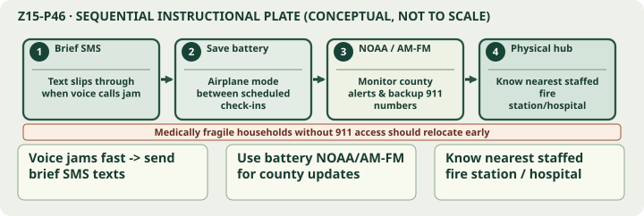

Z15-P46 · Disaster scenarios · New manuscript
Adapt cleanly when cellular networks congest, broadband drops, and 911 is degraded
Keep emergency alerts, family status updates, and rescue access working despite regional telecom blackouts.
When it applies · Widespread storms, wildfires, cyber/fiber cuts, or tower power failures disrupting phone and internet service.
Equipment · Battery NOAA Weather Radio, AM/FM radio, paper contact cards, phone in low-power SMS mode, and knowledge of nearest fire/police station.

Actions
- Switch from voice calls to short SMS text messages immediately during regional disasters—voice circuits jam within minutes while brief texts queue and slip through congested towers using minimal phone battery.[D13, T11]
- Keep phones in Airplane Mode or Low-Power Mode between scheduled check-in windows, disable auto-sync/video streaming, and check local official AM/FM and NOAA Weather Radio broadcasts for county updates and alternate emergency dispatch numbers if 911 lines experience local outages.[D13, U16, T15]
- Note that Text-to-911 availability varies by county (call voice 911 first whenever possible; use Text-to-911 only where supported or if unable to speak)—and if ALL phone networks fail completely during a life-threatening emergency, know the physical address of your nearest staffed fire station, police precinct, or hospital.[D13, T02]
Failure recognition · Making twenty frantic back-to-back voice calls on a congested network until the battery dies before an important evacuation update arrives.[D13, U16]
Verify · Confirm SMS priority habit, paper address of nearest fire station/hospital logged, and battery NOAA/AM-FM radios active.[D13, U16]
Stop or change course · Medically fragile households facing complete loss of 911 access during an active hazard should relocate early to a staffed serviced area.[D13, T10, U17]
Evidence and editorial notes
- D13 · FEMA / Ready.gov · Make a Plan (current web edition)
- Section: Communications Outages, SMS Priority, and Out-of-Area Rally Contacts · Conditions: Regional cellular congestion, tower power loss, or internet blackouts
Support: Use short SMS text messages instead of voice calls when cell networks congest, designate an out-of-area contact person to relay family status, establish fixed physical household meeting locations (neighborhood and out-of-town), and monitor battery NOAA/AM-FM radio for official updates.
Limitations: Emergency 911 text availability varies by county; confirm local PSAP capability in advance and keep voice dialing primary where reachable. · Conflicting evidence: None; builds on T11 and U16.
Editorial note: Grounds communications-failure fallback and group accountability cards. · Specialist reviewer: Emergency communications and emergency management
Primary source · checked 2026-11-24 - T02 · American Red Cross · First Aid Steps (current web edition)
- Section: First Aid Steps > Call 9-1-1 · Conditions: Lay emergency response to unresponsiveness, abnormal breathing or severe bleeding
Support: Activate EMS and get needed equipment. Follow dispatcher directions and act within training.
Limitations: Remote locations may delay EMS arrival, requiring sustained stabilization after activation. · Conflicting evidence: None; aligns with NPS-E.
Editorial note: Mandates early emergency activation and dispatcher adherence. · Specialist reviewer: EMS and wilderness medicine
Primary source · checked 2026-11-24 - T10 · FEMA / Ready.gov · People with Disabilities (current web edition)
- Section: People with Disabilities > Make a Plan and Build a Kit · Conditions: Individuals with mobility, sensory, medical, or power-dependent access and functional needs
Support: Build a personal support network, plan accessible evacuation transport, register voluntarily with local emergency registries where available, and plan backup power and spare supplies for medical devices, medications, and service animals.
Limitations: Local registry availability and utility priority-restoration policies vary by jurisdiction. · Conflicting evidence: None; extends generic preparedness plans to accessible requirements.
Editorial note: Directly addresses Z01 accessible emergency planning requirement. · Specialist reviewer: Accessible emergency management and disability preparedness
Primary source · checked 2026-11-24 - T11 · FEMA / Ready.gov · Make a Plan (current web edition)
- Section: Make a Plan > Family Emergency Communication Plan · Conditions: Households and traveling groups preparing for disruptions
Support: Record out-of-area contacts, local meeting places, medical/allergy summaries, and alternate communication channels (text vs voice) in paper and offline formats; practice the plan periodically.
Limitations: Cellular networks often congest during disasters while SMS or out-of-area contacts may still connect. · Conflicting evidence: None; complements outdoor trip-plan cards.
Editorial note: Anchors emergency communication protocols and group contingency plans. · Specialist reviewer: Emergency management and communications
Primary source · checked 2026-11-24 - T15 · NOAA NWS · NOAA Weather Radio All Hazards (current web edition)
- Section: NOAA Weather Radio All Hazards > Coverage and Receivers · Conditions: Weather and civil-hazard monitoring across the United States
Support: NOAA Weather Radio broadcasts continuous official warnings directly from NWS offices on VHF frequencies; battery or hand-crank receivers with SAME alerting operate independently of cellular networks.
Limitations: VHF line-of-sight range can be attenuated in deep valleys or dense metal structures; verify local transmitter reception before relying on it. · Conflicting evidence: None; aligns with READY-ALERTS.
Editorial note: Documents offline weather-alert radio capabilities and reception limits. · Specialist reviewer: Meteorology and emergency communications
Primary source · checked 2026-11-24 - U16 · FEMA / Ready.gov · Emergency Alerts (current web edition)
- Section: Household Emergency Communications During Grid and Cell Outages · Conditions: Residential power, internet, and cellular tower disruptions
Support: Maintain a battery/crank NOAA Weather Radio, spare power banks, car-charger backups, written contact cards, and local AM/FM broadcast station lists so warnings and utility restoration updates remain accessible without Wi-Fi or cell data.
Limitations: Cordless landline handsets and VoIP routers fail immediately when house power drops unless separately backed up. · Conflicting evidence: None; links Z13 household comms to Z15 disaster alerts.
Editorial note: Grounds home communications continuity during extended blackouts. · Specialist reviewer: Emergency communications specialist
Primary source · checked 2026-11-24 - U17 · FEMA / Ready.gov · Evacuation (current web edition)
- Section: Household Evacuation Thresholds When Utilities Fail · Conditions: Uninhabitable indoor temperatures, sewage backup, persistent CO alarm, or structural/utility hazard
Support: Establish clear pre-agreed exit triggers to relocate to a warming center, hotel, or relatives BEFORE indoor freezing, carbon monoxide alarms, medical-device battery exhaustion, or impassable blizzard roads trap occupants.
Limitations: Waiting until indoor pipes burst or batteries hit zero removes safe travel options. · Conflicting evidence: None; aligns with T13 and E14.
Editorial note: Defines objective household abandonment thresholds in Z13. · Specialist reviewer: Emergency management and cold-weather operations
Primary source · checked 2026-11-24
Source lineage · FEMA Alerts and Make a Plan; new manuscript · Classification · New manuscript.